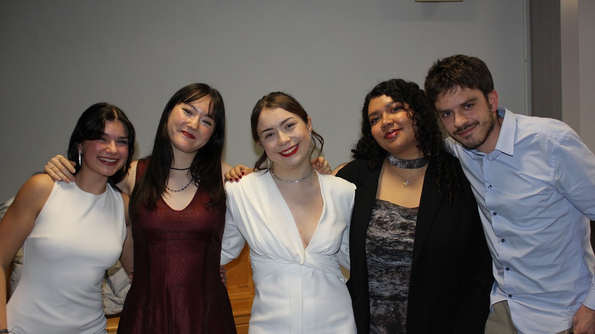

01 / 08
Outgoing Exchanges
Join OGX and inspire global changemakers
The OGX department is dedicated to empowering young people (18 to 30 years old) to volunteer abroad through Global Volunteer (OGV), an international experience that allows them to contribute to impactful projects while immersing themselves in new cultures.
As part of OGX, you will:
- Promote Global Volunteer: Help students discover the value of volunteering abroad.
- Guide interested participants: Support them from their first inquiry to their departure.
- Ensure a smooth journey: Help make their experience abroad enriching and hassle-free.
If you are passionate about global impact, cultural exchange and helping young people step out of their comfort zone, OGX is the place for you.